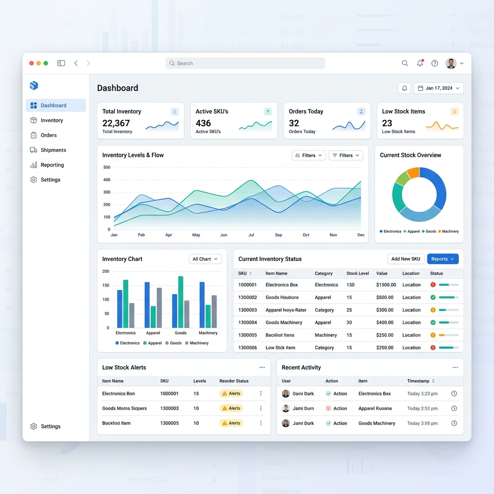
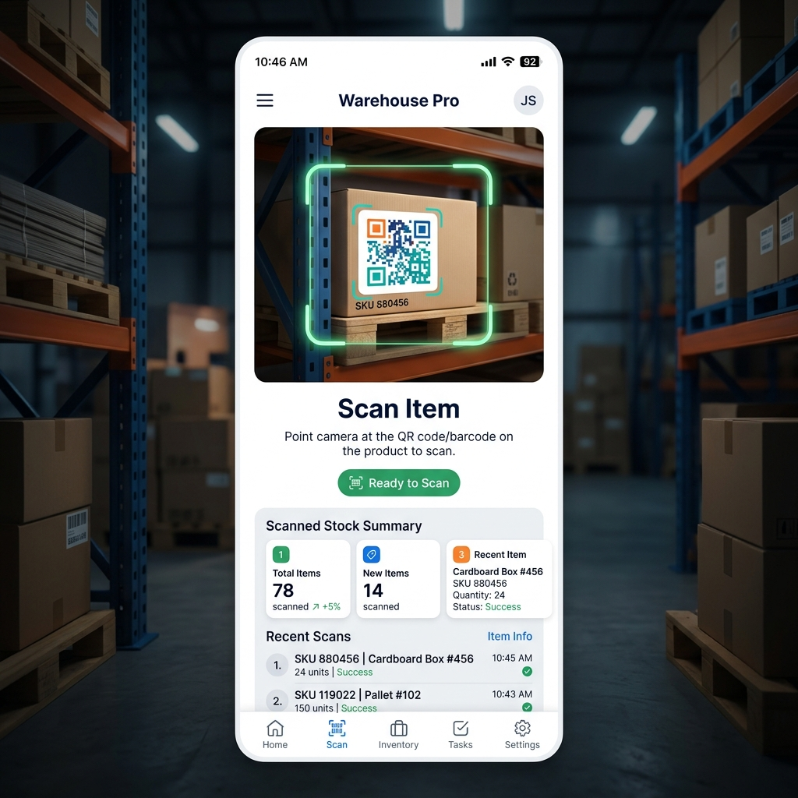

Kendalikan pergerakan barang Anda dengan dua platform terintegrasi: Web Dashboard untuk Admin dan Mobile Scanner untuk Staf Lapangan.


Semua yang Anda butuhkan untuk memantau, melacak, dan menagih biaya penyimpanan barang otomatis.
Generate QR Code unik per item atau batch langsung dari sistem. Scan barang menggunakan kamera smartphone staf.
Catat riwayat barang masuk/keluar lengkap dengan user, tanggal, jam. Perubahan status otomatis dan realtime.
Akses terpisah antara Admin (Master Data, Laporan) dan Staf Gudang (Input Scan, Cek Status).
Perhitungan otomatis durasi penyimpanan (jam/hari) untuk rekap tagihan (billing) per customer atau barang.
Pusat komando operasional gudang. Kelola seluruh master data, buat dan ekspor QR Code, serta dapatkan wawasan realtime tentang pergerakan stok.
Manajemen SKU, input manual jika diperlukan, edit kategori, dan pantau indikator stok secara keseluruhan.
Sistem pencetakan stiker label QR Code massal untuk ditempel pada palet atau produk fisik.
Rekapitulasi tanggal masuk ke keluar untuk menghitung total biaya inap dan durasi sewa setiap item.
Aplikasi ringan untuk staf gudang fokus pada kecepatan. Ubah smartphone Android apa pun menjadi alat pindai barang kelas profesional.
Gunakan kamera smartphone untuk memindai barang dengan cepat dan akurat, bebas dari kesalahan ketik.
Satu ketukan setelah scan untuk memproses barang sebagai 'Masuk' atau 'Keluar', langsung tercatat ke basis data admin.
Admin langsung melihat update stok terkini detik itu juga tanpa perlu serah-terima kertas laporan.
Sistem kami bekerja dengan proses 4 tahap ringkas untuk menjamin keselamatan data dan integritas inventaris Anda.
Admin mendaftarkan item di Dashboard Web dan mencetak stiker QR unik.
Staf lapangan scan QR stiker menggunakan Mobile App saat barang tiba atau pergi.
Status barang berubah otomatis menjadi "Tersimpan" atau "Keluar".
Sistem mengalkulasi durasi penyimpanan secara jam/hari untuk rincian tagihan klien.